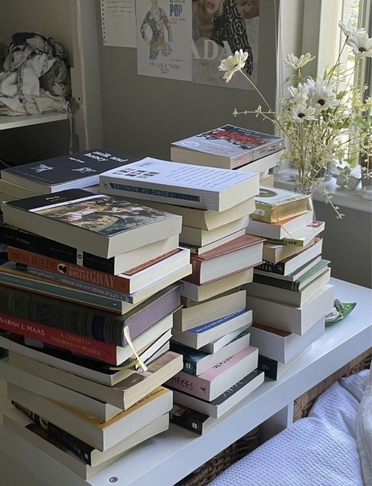
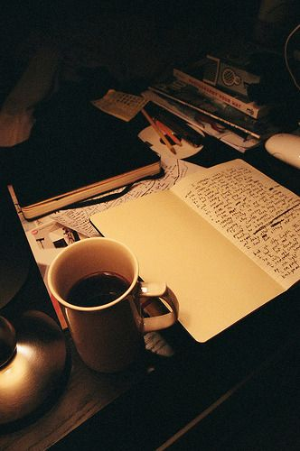
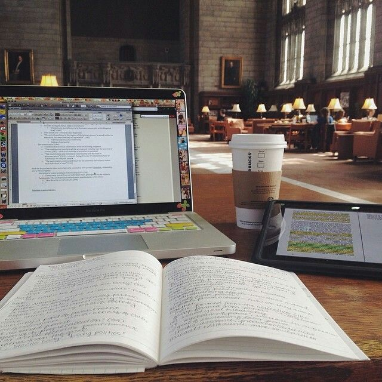
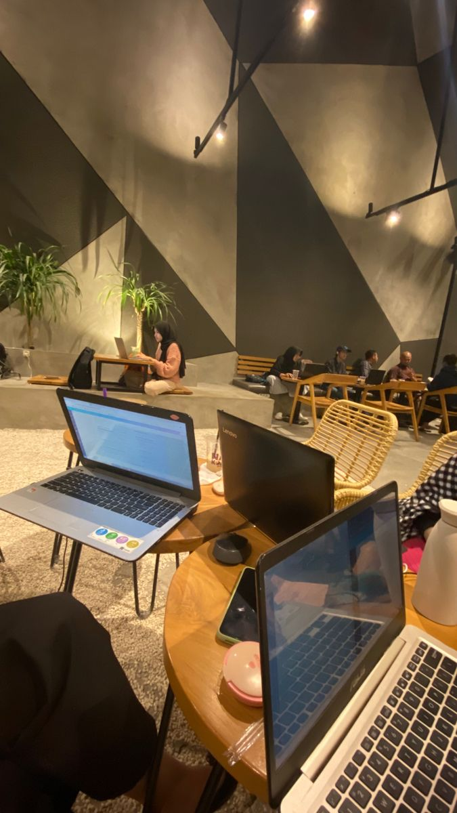

Membaca

Membaca menjadi proses belajar yang sangat panjang bagi saya.
Maka membaca menjadi aktivitas hal utama bagi saya yang harus saya lakukan.
Menulis

Menulis adalah kegiatan yang dari kecil selalu dilakukan hingga sekarang,
dan kemungkinan akan selamanya. Saya menulis apapun. Alasannya yaitu karena takut
suatu waktu bisa lupa. Mulai dari pengalaman, cerita fiksi, bahkan resolusi.
Belajar

Aktivitas sehari-hari saya juga yaitu belajar. Formal dan non formal.
Melanjutkan studi pendidikan di jenjang kuliah dan juga belajar tentang
hal apapun.
Project

Menyelesaikan project biasanya dilakukan bersama tim saya.
Namun ada bebraapa hal project yang dikerjakan secara mandiri.